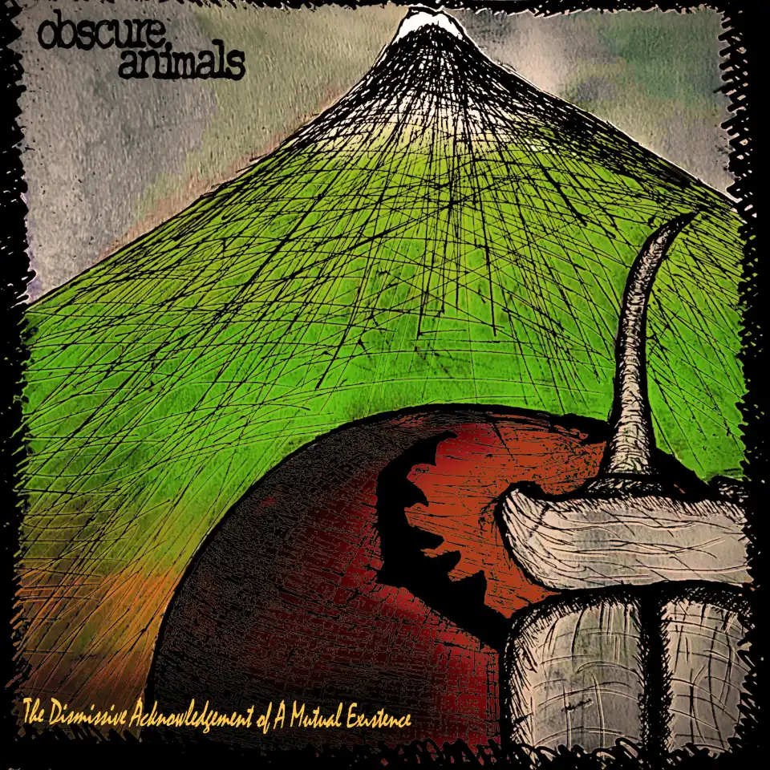
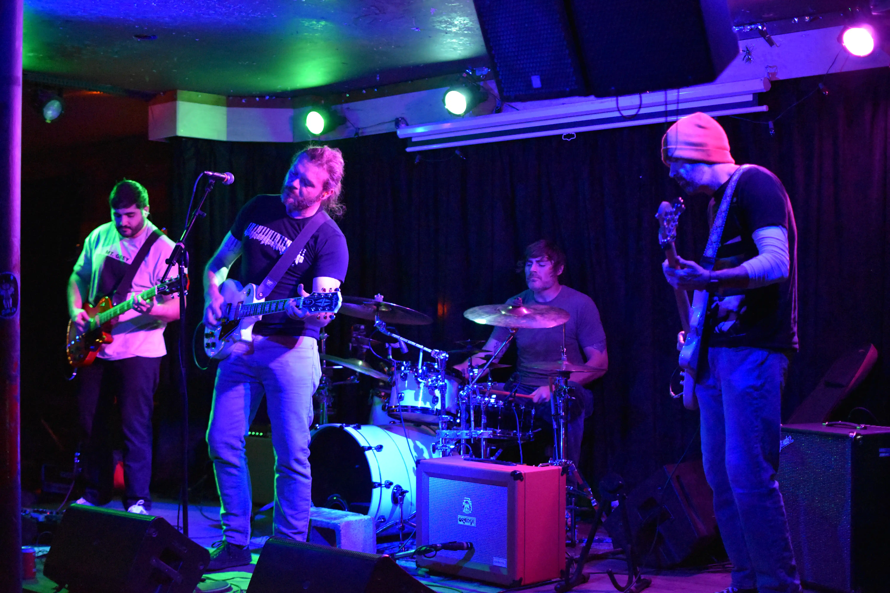

About
Obscure Animals is an alternative rock, post-hardcore, Midwest emo band based out of Austin, Texas. Formed in 2021, Obscure Animals is JR Kaufman, Patrick Shea, David Menendez, and Jesse Blankenship.
Obscure Animals released their debut EP, The Intervention, in 2021 and then their debut album, Picking Berries On The Way To The Apocalypse, in 2022, which was highly praised locally, even reaching the airwaves of 101.5 KROX-FM 101X Homegrown, as well as an honorable mention on ATX ROCK's best of 2023 for their single, It'll Be Fall Soon.
In July 2025, Obscure Animals released their sophomore album, The Dismissive Acknowledgement of a Mutual Existence, followed by a new special Halloween single, This House Ain't Clean, which also received local praise from 101X and 93.7 KLBJ-FM Armadillo Nation.
You can catch Obscure Animals in Austin-based venues like Mohawk and Hotel Vegas all throughout 2026 and beyond! Come listen and check out their sweet merch, which you can find for sale on Bandcamp.
Latest album: The Dismissive Acknowledgement of a Mutual Existence
You can stream Obscure Animals' latest album, The Dismissive Acknowledgement of a Mutual Existence, on all major streaming platforms, including Spotify. You can also purchase it directly on Bandcamp.

Track listing
- Skyline
- It'll Be Fall Soon
- Defeated
- Fusion
- Dew
- Hourglass
- Departer
- Foot of The Mountain
- Facing The Summit
- Poster
- Living The Dream
- Invincible
- (Bonus) Facing The Summit orchestral mix
Band Members
- JR Kaufman - Vocals, Guitar
- Patrick Shea - Bass
- Jesse Blankenship - Drums
- David Menendez - Guitar
